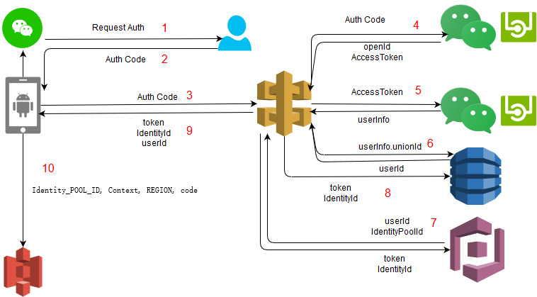

基于Cognito的微信第三方登陸系統
步驟
- App发起授权，应用唤起微信客戶端，诱导用戶点击授权按鈕
- 用戶点击授权按钮后 APP得到auth code
- 应用用auth code作为参数向远端的api发起请求
- API 发送auth code到微信接口 返回用戶的openId和AccessToken
- API发送AccessToken到微信接口 返回userinfo 包括用戶昵稱 头像等信息
- API向dynamo DB中加入一条用戶信息 返回得到userId
- API 將userId和身份池Id发送到cognito接口 返回user的IdentityId和token
- 将token和 identityId存入dynamo DB
- API將token和IdentityId userId 返回給客戶端APP
客戶端APP可以用identity 身份池Id context上下文 region和auth code喚起client, 最后用client訪問AWS資源

QA：
- 步驟原理如上图所示
- 为什么要进行二次访问： A： 为了得到用户信息，如头像，昵称等
- 微信的认证授权协议： A: Auth2 允许用户访问个人信息
- 用户拥有的权限 A：同身份池的权限
- 准备 A: AWS账号 创建身份池 设定用户的权限 APP在微信公开平台的ID和密钥
- Cognito是什么 A：Amazon Cognito 为您的 Web 和移动应用程序提供身份验证、授权和用户管理。您的用户可使用用户名和密码直接登录，也可以通过第三方 (如 Facebook、Amazon 或 Google) 登录。 https://aws.amazon.com/cn/documentation/cognito/?id=docs_gateway
- 每一个part的作用 数据库用于记录保存用户信息 Cognito通过对身份池的管理对用户做授权 API gateway:微信接只能由后台访问所以用lambda实现，
- IOS兼容性 AWS提供兼容IOS的开发工具包